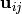

This module provides an implementation of the reservoir state method for
reducing a master equation model of unimolecular reaction networks to a set of
phenomenological rate coefficients  .
.
An exception raised when the reservoir state method is unsuccessful for any reason. Pass a string describing the cause of the exceptional behavior.
Use the reservoir state method to reduce the master equation model to a
set of phenomenological rate coefficients and a set of
time-independent population vectors  and
. Inputs are the temperature T in K; pressure P
in Pa; list of energy grains Elist in J/mol; dimensionless densities of
states for each isomer and reactant channel densStates; collision
matrix Mcoll for each isomer; isomerization, association, and dissociation
microcanonical rate coefficients Kij, Fim, and Gnj, respectively;
energies of the first reactive grain for each isomer Ereac in J/mol;
and the numbers of isomers, reactant channels, and product channels Nisom,
Nreac, and Nprod, respectively. The method involves a significant linear
solve, which is accelerated by taking advantage of the bandedness of the
active-state matrix. The nonreactive grains are placed in the reservoir,
while the reactive grains are placed in the active-state.